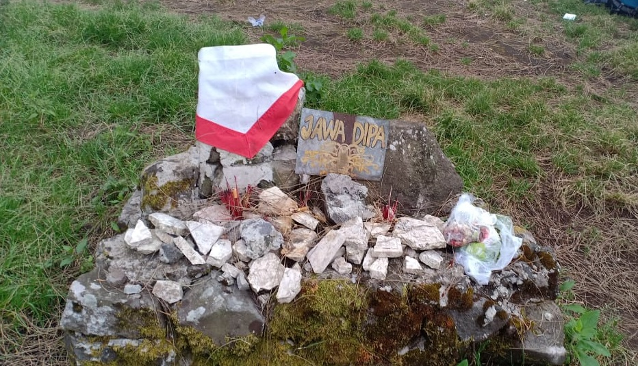
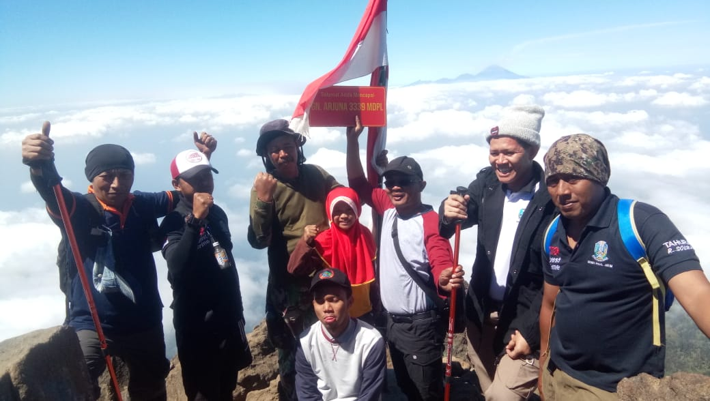
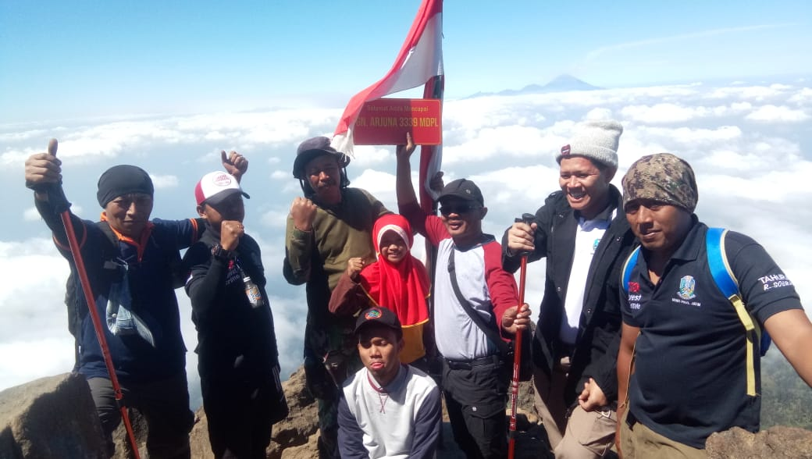

JALUR PENDAKIAN VIA TAMBAKSARI (PURWOSARI)
Pendakian Gunung Arjuno via Purwosari adalah salah satu jalur pendakian yang sangat menarik. Suasana mistis dengan berbagai situs peninggalan Kerajaan Majapahit dan tempat-tempat pemujaan bplawisa ditemukan di sepanjang jalur pendakian. Inilah kenapa pendakian Gunung Arjuno via Purwosari disebut sebagai pendakian spiritual.
Jalur pendakian Gunung Arjuno via Purwosari dimulai dari Desa Tambak Watu, Kecamatan Purwodadi, Kabupaten Pasuruan. Dari Malang bisa dimulai dari Terminal Arjosari menuju pasar Purwosari dengan angkutan umum dan dilanjutkan menuju pos perijinan Dusun Tambak Watu. Rute dari Surabaya bisa menaiki bus tujuan Malang dan turun di kantor penggadaian. Untuk menuju ke basecamp bisa menggunakan ojek yang ada sepanjang malam dengan tarif sekitar Rp. 30.000 (negoisasi) dengan perjalanan kurang lebih 30 menit.
Kontak
- 0822 45814072 (NUR YUSUF EKO)
- 0822 44737622 (HADI CHOIRUL)
Basecamp - Pos 1 Onto Boego (1 Jam)
Pendakian Gunung Arjuno via Puwosari, dari Tambak Watu melanjutkan perjalanan menuju ke Pos 1 dengan jalan yang masih landai dengan pepohonan kopi di sekitar. Banyak persimpangan di jalur menuju pos 1 dan ikutilah pipa air yang ada. Jika tersesat jangan ragu untuk bertanya pada penduduk sekitar yang melintas atau bermalam sampai menunggu pagi. Onto Boego dengan ketinggian 1.300 mdpl merupakan salah satu Situs Pemujaan Sipitual Gunung Arjuno yang bisa pertama ditemui di jalur pendakian.
[foto pos 1 Onto Boego]
Pos 1 Onto Boego - Pos 2 Tampuono (1 Jam)
Menuju pos 2, jalur pendakian Gunung Arjuno masih berupa tanah padat berkelok dan menanjak. Jalur sudah memasuki hutan dengan pepohonan besar yang rapat. Pos 2 berupa warung untuk melepas lelah dan beberapa gubuk yang biasa digunakan para peziarah.
Gubuk yang berada tepat di pos 2 adalah petilasan Eyang Sekutrem. Di pos 2 ini terdapat Sendang Dewi Kunti untuk mengisi perbekalan air. Untuk menuju ke Sendang Dewi Kunti, ikuti jalan paving ke arah kiri dimana ada beberapa bangunan lagi sebagai tempat pemujaan dan juga gubuk untuk para peziarah.
Pos 2 Tampuono - Pos 3 Eyang Sakri (10 Menit)
Jarak dari pos 2 ke pos 3 tidak jauh, jalan menanjak yang santai akan membawa sampai ke pos 3. Ada papan berisi petunjuk jalan di pertigaan ketika hampir sampai di pos 3, ikuti jalan ke arah jalur pendakian Gunung Arjuno. Ada satu shelter di pos 3 yaitu petilasan Hyang Sakri.
Pos 3 Eyang Sakri - Pos 4 Eyang Semar (1 Jam 30 Menit)
Selepas dari pos 3, jalur pendakian Gunung Arjuno mulai menanjak. Dari trek tanah akan berubah menjadi bebatuan dengan pemandangan alam pegunungan yang cukup indah. Di trek berbatu ini pohon-pohon besar mulai jarang. Sesampainya di atas, jalan mulai landai dan kembali masuk ke hutan dengan pepohonan yang rindang di sekitas jalan setapak.
Tak jauh di tengah hutan ada sebuah gubuk bernama "Rahayu" yang ditulis dalam aksara jawa. Meski sebagai tempat pemujaan para peziarah, gubuk ini cocok untuk tempat beristirahat karena lokasinya yang cukup teduh, sunyi, dan sejuk.
Selepas dari gubuk, jalur pendakian Gunung Arjuno tetap menanjak dengan trek berupa tanah padat yang didominasi akar-akar pepohonan dan batu-batu besar. Perjalanan akan sangat menguras tenaga sampai akhirnya menemukan pos 4 dengan beberapa gubuk seperti di pos 2. Di tempat ini juga terdapat sumber air.
Ada Pondok Konservasi Treppa dan juga gubuk-gubuk lain yang bisa digunakan untuk beristirahat. Di bagian atas ada patung Eyang Semar dan sebuah tempat pemujaan dengan beberapa dupa yang masih tertancap di dekat patung Eyang Semar. Ini adalah Situs Pemujaan Gunung Arjuno yang dipercaya tempat moksa Eyang Semar.
Pos 4 Eyang Semar - Pos 5 Mangkutoromo (40 Menit)
Perjalanan dari pos 4 ke pos 5 tidak cukup jauh, jalanan berupa tanah menanjak dan berbelok-belok hingga menemukan bangunan candi yang besar dengan punden berundak di bawahnya. Itulah petilasan Mangkutoromo
Mangkutoromo adalah tempat camp favorit di sepanjang jalur pendakian Gunung Arjuno via Purwosari. Selain ada sumber air, tempat yang sangat luas dan gubuk untuk bermalam, ada beberapa tanaman yang bisa dimasak seperti paku-pakuan, jamur, dan lain sebagainya.
Ada Mitos Gunung Arjuno yang perlu diketahui sebelum melanjutkan pendakian, seperti beberapa pantangan yaitu, jika jumlah ganjil maka haruslah membawa tongkat, tidak menggunakan pakaian berwarna merah dan untuk wanita yang sedang haid lebih baik tidak melanjutkan perjalanan. Meski ada beberapa Tips Melakukan Pendakian di Masa Haid, prosedur pendakian Gunung Arjuno via Purwosari melarang hal tersebut karena berhubungan dengan hal mistis.
Pos 5 Mangkutoromo - Pos 6 Candi Sepilar (20 Menit)
Selepas dari Mangkutoromo, jalur pendakian Gunung Arjuno berupa punden berundak yang lumayan tinggi dan cukup membuat ngos-ngosan. Sampai diatas akan menjumpai Candi Sepilar yang bentuknya mirip dengan petilasan Mangkutoromo namun lebih kecil.
Pos 6 Candi Sepilar - Pos 7 Jawa Dipa (1 Jam 45 Menit)
Trek mulai menanjak di tengah hutan yang didominasi pohon pinus. Tidak ada tempat datar di sepanjang jalur pendakian hingga sampai di Pos 7. Pos 7 - Jawa Dipa, adalah lokasi camp favorit setelah Mangkutoromo. Meski tidak ada sumber air, lokasi ini cukup luas untuk membuat 4-5 tenda. Siapkan stamina di pos Jawa Dipa ini karena selepas Jawa Dipa, trek akan membutuhkan tenaga yang sangat ekstra.

Pos 7 Jawa Dipa - Plawangan (3 Jam 30 Menit)
Selepas Jawa Dipa, tidak ada ampun untuk trek yang akan dilalui menuju Plawangan. Trek yang sangat menanjak tanpa bonus di tengah hutan pinus akan sangat melelahkan. Trek tanah yang padat sesekali akan menjadi trek bebatuan dengan kemiringan tinggi. Ini adalah trek terpanjang yang dinamai bukit penyesalan dimana ketika sampai di atas, masih ada bukit yang harus didaki lagi. Ini adalah trek pendakian Gunung Arjuno yang paling menguras tenaga.

Plawangan - Puncak Gunung Arjuno (1 Jam)
Semakin dekat ke Plawangan, jalur pendakian lumayan landai dan tinggal mengikuti jalur ke kiri memutar bukit hingga sampai di Plawangan. Plawangan adalah pertigaan dimana ada petunjuk arah untuk ke puncak Gunung Arjuno dan jalur Pendakian Gunung Arjuno via Lawang. Ada beberapa tempat datar yang bisa digunakan untuk beristirahat atau membuat tenda kecil maupun shelter, lokasinya ada di sekitar jalur ke arah puncak.
Dari Plawangan ke Puncak Gunung Arjuno, jalur masih menanjak dengan pepohonan cantigi yang mulai mendominasi area. Ada beberapa tikungan dan ikuti jalur ke kanan, ke arah puncak.
Tidak dibutuhkan waktu lama, ketika sampai pada daerah bebatuan, puncak Ogal Agil sudah nampak dan hanya dibutuhkan waktu sekitar 10 menit mendaki bebatuan hingga sampai di Puncak Gunung Arjuno. Di puncak tampak Gunung Welirang dan juga Gunung Semeru.
 

Tips Pendakian Gunung Arjuno via Tambaksari :
- Gunakan Peralatan dan Perlengkapan Mendaki Gunung yang lengkap untuk kenyamanan dan keamanan.
- Terdapat air di sepanjang jalur hingga Mangkutoromo, tapi jika musim kemarau, air terbatas dan hanya bisa ditemukan di pos tertentu seperti di Pos 2 - Tampuono dan Mangkutoromo.
- Ada warung di Pos 2 - Tampuono, yang cocok untuk beristirahat.
- Jangan merusak tempat pemujaan atau situs yang ada di sepanjang jalur pendakian.
- Lokasi camp yang strategis adalah di Mangkutoromo karena ada shelter dan sumber air. Tidak ada salahnya jika ingin camp di Jawadwipa untuk mengejar waktu summit.
- Hormati peraturan yang ada di sepanjang jalur pendakian, mengingat purwosari adalah jalur pendakian spiritual yang berhubungan dengan hal mistis.
- Jika cuaca buruk, segera turun dari puncak karena rawan sambaran petir, atau bisa menunda waktu ke puncak.
- Jika ingin lintas jalur, ada sedikit tempat datar di dekat Plawangan untuk mendirikan tenda.
Sumber :
- http://infopendaki.com/jalur-purwosari-pendakian-gunung-arjuno/
- https://www.manusialembah.com/2016/01/pendakian-gunung-arjuna-3339-mdpl-via.html